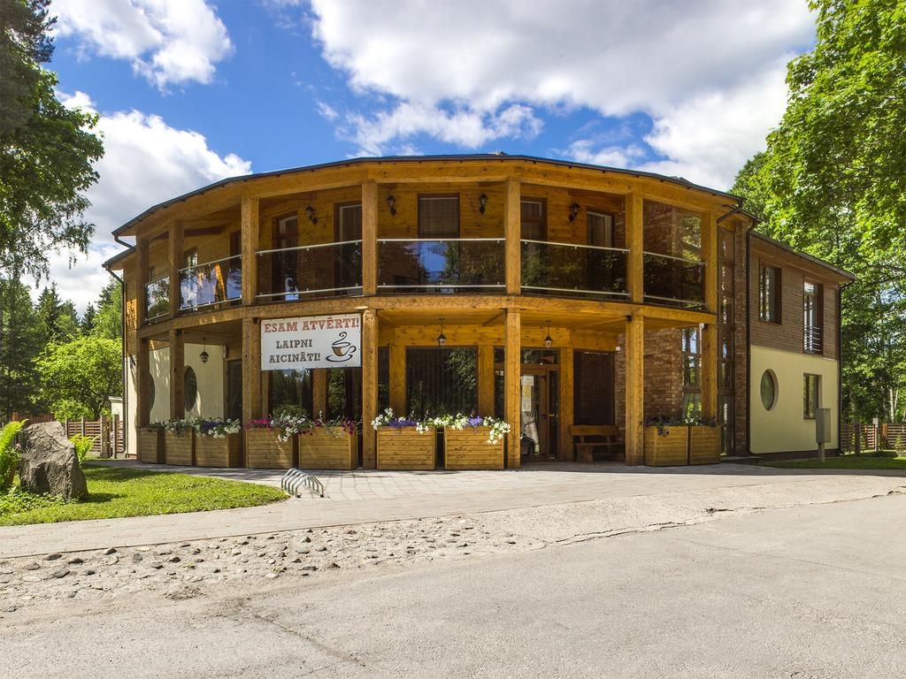
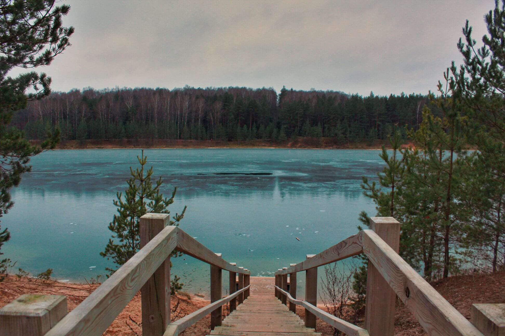
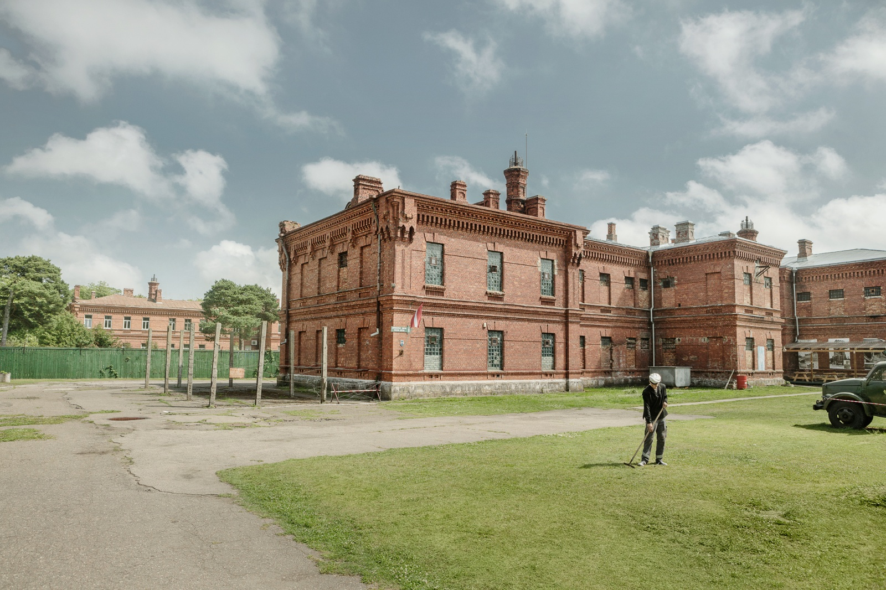

Dodieties pārgājienā uz Gaujas ieteku jūrā pa skaisto Piejūras dabas
parku vai izstaigājiet piesnigušās purva takas Ķemeru tīrelī, bet pēc
tam vēl izslidojieties netālajā Ķemeru sanatorijas parkā. Savukārt,
ja šķiet, ka ziemas diena ir par īsu, lai baudītu atpūtu dabā,
neskumstiet, bet dodieties slēpot uz Ogres Zilajiem kalniem, kur trase
izgaismota arī vakara stundās, vai piektdienās, sestdienās un
svētdienās uz Ieriķu dzirnavām, kas tieši nakts stundās pārvēršas par
īstu pasaku valstību.
Ķemeru nacionālais parks
-
Dziednieciskie avoti Ķemeru apkārtnē atklāti jau sen, bet tolaik
uz avotiem nokļūt bijis grūti, jo tie atradās purvainā apkārtnē un uz
tiem neveda neviens ceļš. Visērtākā nokļūšana bijusi ar laivu pāri
Slokas ezeram. Lai arī jau kopš 19. gadsimta sākuma tur izbūvēts labs
ceļš, attīstīta infrastruktūra, vairāk nekā 100 gadus brauc vilciens
(kādreiz varējis pat no Maskavas bez pārsēšanās atbraukt) un reiz pat
kursējis tramvajs, upīšu, kanālu, dīķīšu un ezeru tīkls saglabājies
tikpat skaists, un ziemas dienās šīs ūdenspasaules burvību vēl
paspilgtina baltais sniegs. Savukārt aizsalušās ūdenstilpnes lieliski
noder slidošanai, vien jāpaņem līdzi sniega lāpsta, lai notīrītu laukumu
– personīgā slidotava, kur neviens netraucē griezt piruetes vai spēlēt
hokeju, gatava.

Ogres Zilie kalni
-
Distanču slēpošana Latvijā bijusi populāra jau gandrīz 100 gadus,
un, līdzko zemi klāj balta sniega kārta, daudzi steidz uz mežu vai
jūras krastu, lai svaigā gaisā baudītu aktīvu atpūtu. Šajās
brīvdienās ļoti populāra bijusi Ogres Zilo kalnu distanču slēpošanas
trase, kur cauri piesnigušiem priežu stiliem traukušies gan
pieredzējuši sportisti, gan ģimenes ar bērniem.

Karosta
-
Karosta – lielākā vēsturiskā militārā teritorija Baltijā – aizņem
aptuveni trešdaļu Liepājas teritorijas tās ziemeļu daļā. Tā ir daļa
no Liepājas, bet reizē – pasaule pati par sevi. Karosta ir
valdzinoša savā skarbumā, brīnumaina, paradoksāla un unikāla vieta
ne tikai Latvijas, bet arī pasaules vēsturē un arhitektūrā. Karosta
būvēta 19. un 20. gadsimta mijā kā Krievijas impērijas militārā
bāze, un šodien te pilsētvidē savdabīgi savijas cariskās Krievijas
militārā elegance un padomju militārisma robustums. Karosta var
patikt, var arī nepatikt, bet noteikti neatstāj vienaldzīgu,
zina teikt paši liepājnieki.

Jau pēc dažām dienām sola atkusni visā Latvijā, tāpēc, ja iespējams,
steidziet izbaudīt ziemas priekus un krāšņos dabas skatus, kamēr tas
vēl iespējams.

Informācijas avoti: delfi.lv